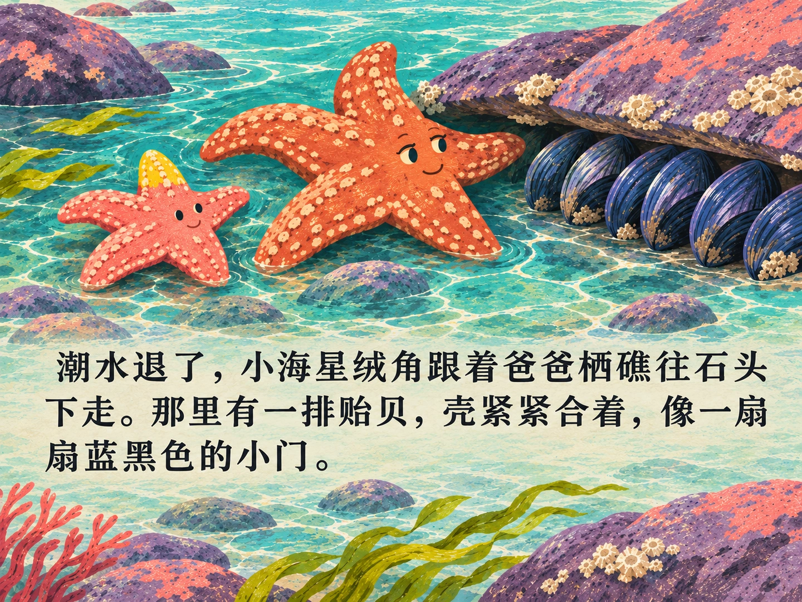

<!doctype html><html lang="zh-CN"><meta charset="utf-8"><meta name="viewport" content="width=device-width, initial-scale=1, viewport-fit=cover"><title>贝壳里的一顿饭</title><style>*{box-sizing:border-box}body{margin:0;background:#243643;color:#faf3df;font:18px system-ui}main{height:100dvh;display:flex;flex-direction:column;align-items:center;justify-content:center;gap:12px;padding:0 8px calc(8vh + env(safe-area-inset-bottom))}img{object-fit:contain;max-width:100%;max-height:calc(100dvh - 8vh - env(safe-area-inset-bottom) - 60px)}nav{display:flex;align-items:center;gap:14px;height:44px;flex-shrink:0}button{border:0;border-radius:8px;min-height:44px;padding:0 13px;background:#f3deb2;color:#243643;font:inherit}button:disabled{opacity:.5}a{color:#f3deb2}</style><main><nav aria-label="绘本阅读"><a href="../">首页</a><button id="prev">上一页</button><span id="count" aria-live="polite"></span><button id="next">下一页</button></nav></main><script>const images=["page-01.webp","page-02.webp","page-03.webp","page-04.webp","page-05.webp","page-06.webp","page-07.webp","page-08.webp","page-09.webp","page-10.webp"],stories=["潮水退了，小海星绒角跟着爸爸栖礁往石头下走。那里有一排贻贝，壳紧紧合着，像一扇扇蓝黑色的小门。","绒角趴在一只贻贝旁边，左看右看。“这么大一个壳，我的小嘴怎么装得下？”他有点舍不得离开。","栖礁把两条腕搭到贝壳两边。腕下面的小管足一排排贴住壳，绒角凑过来，看爸爸怎么用力。","栖礁慢慢拉，一点也不着急。过了一小会儿，两片壳中间露出一道细缝，细得连一片小海草也塞不进去。","绒角还等着爸爸把壳拉得更开。栖礁说：“这就够了。我的嘴在身体下面，你从这儿看。”绒角把身子往侧边挪了挪。","栖礁把柔软的一部分胃从嘴里伸出来，贴进细细的壳缝。绒角睁大眼睛，原来午饭还在贝壳里面呢。","胃先在壳里把一部分食物变软，再把食物带回身体里面。绒角在旁边等了好一会儿，贝壳始终留在原地。","“原来不用吞下整个壳！”绒角轻轻拍了拍岩石。他看见脚边还有一只小些的贻贝，就把两条腕搭上去。","绒角一开始拉得太快，小管足松开了。他换了个稳当的位置，重新抱紧贝壳，这次他愿意慢慢等。","潮水又漫到石头边。绒角看见自己抱住的那只贻贝露出一点小缝。他挪了挪身子，在这张石头桌旁开始吃午饭。"];const page=document.querySelector("#page"),prev=document.querySelector("#prev"),next=document.querySelector("#next"),count=document.querySelector("#count");let i=0,start;function show(n){i=Math.min(images.length-1,Math.max(0,n));page.src=images[i];page.alt=stories[i];count.textContent=(i+1)+" / "+images.length;prev.disabled=i===0;next.disabled=i===images.length-1}prev.onclick=()=>show(i-1);next.onclick=()=>show(i+1);document.addEventListener("keydown",e=>{if(e.key==="ArrowRight")show(i+1);if(e.key==="ArrowLeft")show(i-1)});page.addEventListener("touchstart",e=>start=e.changedTouches[0].clientX,{passive:true});page.addEventListener("touchend",e=>{const d=e.changedTouches[0].clientX-start;if(Math.abs(d)>45)show(i+(d<0?1:-1))},{passive:true});show(0)</script></html>